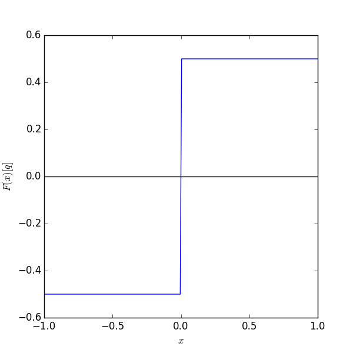

FFM234, Klassisk fysik och vektorfält - Föreläsningsanteckningar
Sep 30, 2019
Repetition: Singulära fält
Punktkälla i origo
- Fältet i punkten \( \vec{r} \)
- Superposition ger potentialen i punkten \( \vec{r} \) från en laddningsfördelning \( \phi(\vec{r}) = \int \rho(\vec{r}\,') \frac{1}{4\pi|\vec{r} - \vec{r}\,'|} dV' \), där \( G(\vec{r}, \vec{r}\,') \equiv \frac{1}{4\pi|\vec{r} - \vec{r}\,'|} \) kallas för Greensfunktionen i \( \Bbb{R}^3 \).
- Hur skall vi skriva källtätheten, \( \rho (\vec{r}) = \vnabla \cdot \vec{F} \), för en punktkälla? Och hur skall vi hantera Gauss sats?
7. Deltafunktioner
Kan vi approximera \( \vnabla \cdot \vec{F} = \rho (\vec{r}) \), där laddningsfördelningen motsvarar en punktkälla, på något sätt? T.ex. $$ \begin{equation} \rho_\varepsilon (\vec{r}) = \left\{ \begin{array}{ll} c & r < \varepsilon \\ 0 & r > \varepsilon \end{array} \right. \label{_auto4} \end{equation} $$ Dvs, en "utsmetad" punktladdning där vi väljer \( c \) så att den totala laddningen är \( q \), dvs $$ \begin{equation} \rho_\varepsilon (\vec{r}) = \left\{ \begin{array}{ll} \frac{q}{4\pi\varepsilon^3/3} & r \le \varepsilon \\ 0 & r > \varepsilon \end{array} \right. \label{_auto5} \end{equation} $$
- Vad blir funktionen då \( \varepsilon \to 0^+ \)?
- Det kan vi tyvärr inte definiera.
- \( \rho(\vec{r}) = \lim_{\varepsilon \to 0^+} \rho_\varepsilon(\vec{r}) \) är inte en funktion; sekvensen av funktioner som erhålls genom att variera \( \varepsilon \) kallas för en distribution.
Deltafunktioner i en dimension
Punktkälla i \( D=1 \)
I en dimension kan vi definiera en punktkälla från potentialen $$ \begin{equation} \phi(x) = -\frac{q}{2} \left| x \right| \label{_auto6} \end{equation} $$

vilket ger fältet $$ \begin{equation} \vec{F}(x) = -\hat{x} \frac{\mbox{d}\phi}{\mbox{d}x} = \left\{ \begin{array}{ll} \frac{q}{2} \hat{x} & x > 0 \\ -\frac{q}{2} \hat{x} & x < 0 \\ \end{array} \right. \label{_auto7} \end{equation} $$

Vi kallar den enda komponenten av detta vektorfält för \( F(x) \), dvs \( F(x) = \frac{q}{2}\sign(x) \). Motsvarigheten till Gauss sats för detta endimensionella fält är $$ \begin{equation} \int_a^b \frac{dF}{dx} dx = F(b) - F(a) = \left\{ \begin{array}{ll} q, & \mathrm{om~} a < 0 < b \\ 0, & \mathrm{annars} \\ \end{array} \right. \label{_auto8} \end{equation} $$ medan en naiv insättning av \( \mbox{d}F / \mbox{d}x = 0 \) i VL hade gett noll.
Problemet är ju att \( \frac{dF}{dx} = 0 \) för \( x \neq 0 \), men "$\frac{dF}{dx} = \infty$" för \( x = 0 \). Vi kan uttrycka detta som en "funktion", \( \frac{dF}{dx} = q \delta(x) \), där
- \( \delta(x) \) är noll då \( x \neq 0 \), och
- integralen \( \int_{a < 0}^{b>0} \delta(x) \mbox{d}x = 1 \).
Distributioner
Vi konstruerar denna "funktion" som en gräns \( \varepsilon \to 0^+ \) för distributionen $$ \begin{equation} h_\varepsilon(x) = \left\{ \begin{array}{ll} 0 & |x| > \frac{\varepsilon}{2} \\ \frac{1}{\varepsilon} & |x| < \frac{\varepsilon}{2} \\ \end{array} \right. \label{_auto9} \end{equation} $$

Kontrollera
$$ \lim_{\varepsilon \to 0} h_\varepsilon(x) = 0, $$ för \( x \neq 0 \). Dessutom har vi $$ \lim_{\varepsilon \to 0} \int_{a<0}^{b>0} h_\varepsilon(x) \mbox{d}x = \lim_{\varepsilon \to 0} \int_{-\varepsilon/2}^{\varepsilon/2} \frac{1}{\varepsilon} \mbox{d}x = \lim_{\varepsilon \to 0} \frac{1}{\varepsilon} \left[ x \right]_{-\varepsilon/2}^{\varepsilon/2} = \lim_{\varepsilon \to 0} 1 = 1. $$Men det finns också andra möjligheter: $$ \begin{align} h_\varepsilon(x) &= \frac{\exp(-x^2 / \varepsilon^2)}{\sqrt{\pi} \varepsilon}, \label{_auto10}\\ h_\varepsilon(x) &= \frac{\varepsilon}{\pi (x^2 + \varepsilon^2)}, \label{_auto11}\\ h_\varepsilon(x) &= \frac{\sin(x/\varepsilon)}{\pi x} \label{eq:sinxdelta}. \end{align} $$
import numpy as np
import pylab as p
# Delta function approximation 1 - 4
def h(eps,x,case):
if case==0:
h = np.zeros(len(x))
h [abs(x) < eps] = 1/eps
return h
elif case==1:
return np.exp(-x**2/eps**2) / (np.sqrt(np.pi)*eps)
elif case==2:
return eps / (np.pi * (x**2 + eps**2))
elif case==3:
return np.sin(x/eps) / (np.sqrt(np.pi)*x)
# End initialization
# Start plot
x=np.linspace(-1,1,200)
for case in range(4):
p.figure(figsize=(6,6))
for eps in np.linspace(0.5,0.1,5):
p.plot(x,h(eps,x,case))
p.xlabel(r'$x$')
p.ylabel(r'$h_{%i,\epsilon}(x)$' %case)

Samtliga dessa utgör en sekvens av funktioner (en distribution) från vilka vi kan definiera Diracs deltafunktion $$ \begin{equation} \delta(x) = \lim_{\varepsilon \to 0^+} h_\varepsilon(x) \label{_auto12} \end{equation} $$ med de definierande egenskaperna
$$ \begin{align} \delta(x) &= 0, \quad x \neq 0 \label{_auto13}\\ f(0) &= \int_a^b f(x) \delta(x) \mbox{d}x, \label{_auto14} \end{align} $$ där \( f(x) \) är en välbeteende funktion och \( \left[ a,b \right] \) inkluderar 0.
Ett specialfall (\( f(x)=1 \)) av ovanstående är $$ \begin{equation} \int_{-\infty}^{+\infty} \delta(x) \mbox{d}x = 1 \label{_auto15} \end{equation} $$
Exempel: endimensionella deltafunktioner
Kontrollera att vi erhåller Diracs deltafunktion från sekvensen \( h_\varepsilon(x) = \frac{\exp(-x^2 / \varepsilon^2)}{\sqrt{\pi} \varepsilon} \).
Lösning: För \( x \neq 0 \) gäller $$ \begin{align} h_\varepsilon(x) &= \frac{1}{\sqrt{\pi} \varepsilon \exp(x^2 / \varepsilon^2)} = \frac{1}{\sqrt{\pi} \varepsilon \left[ 1 + \frac{x^2}{\varepsilon^2} + \frac{1}{2}\left(\frac{x^2}{\varepsilon^2}\right)^2 + \ldots \right] } \nonumber \\ &= \frac{\varepsilon}{\sqrt{\pi}} \frac{1}{\left( x^2 + \varepsilon^2 + \frac{x^4}{2\varepsilon^2} + \ldots \right)} \to 0 \quad \mathrm{då~} \varepsilon \to 0^+ \label{eq:heps0} \end{align} $$ Vidare har vi integralen \( \int_{-\infty}^\infty e^{-x^2 / \varepsilon^2} \mbox{d}x = \sqrt{\pi \varepsilon^2} \) (se tabell över definita integraler, eventuellt Beta 7.5-41). Detta ger $$ \begin{equation} \lim_{\varepsilon \to 0^+} \int_{-\infty}^{+\infty} \frac{\exp(-x^2 / \varepsilon^2)}{\sqrt{\pi} \varepsilon} \mbox{d}x = \lim_{\varepsilon \to 0} \frac{\sqrt{\pi \varepsilon^2}}{\sqrt{\pi} \varepsilon} = 1, \quad \mathrm{för~} \varepsilon>0. \label{eq:heps1} \end{equation} $$ För att vara helt korrekta skall vi egentligen visa den mer allmänna egenskapen \( \int_a^b f(x) \delta(x) \mbox{d}x = f(0) \) för en väl beteende funktion \( f(x) \). Eftersom ekv. \eqref{eq:heps0} gäller, och \( f(x) \) inte utgör något problem, kan vi utöka integrationsintervallet och istället studera $$ \begin{equation} \int_{-\infty}^{+\infty} f(x) \delta(x) \mbox{d}x = f(0). \label{_auto16} \end{equation} $$ Vi Taylorutvecklar, \( f(x) = f(0) + f'(0)x + f''(0)x^2/2+\ldots \), och konstaterar att $$ \begin{equation} \lim_{\varepsilon \to 0} \int_{-\infty}^{+\infty} f(0) h_\varepsilon(x) \mbox{d}x = f(0) \lim_{\varepsilon \to 0} \int_{-\infty}^{+\infty} h_\varepsilon(x) \mbox{d}x = f(0), \label{_auto17} \end{equation} $$ enligt vad vi visat ovan \eqref{eq:heps1}. Det återstår att visa att $$ \begin{equation} \lim_{\varepsilon \to 0} \int_{-\infty}^{+\infty} x^n h_\varepsilon(x) \mbox{d}x = 0, \label{eq:xnheps0} \end{equation} $$ för alla heltal \( n>0 \). I vårt fall har vi en jämn funktion \( h_\varepsilon(x) \) vilket gör att ekv. \eqref{eq:xnheps0} är trivialt uppfyllt för udda \( n \) då integranden blir udda. För jämna \( n=2k \) finner vi (se t.ex. Beta 7.5-42) $$ \begin{equation} \lim_{\varepsilon \to 0^+} \int_{-\infty}^{+\infty} x^{2k} \frac{\exp(-x^2 / \varepsilon^2)}{\sqrt{\pi} \varepsilon} \mbox{d}x = \lim_{\varepsilon \to 0} \frac{2}{\sqrt{\pi} \varepsilon} \frac{(2k-1)!!}{2^{k+1}} \sqrt{\pi} \varepsilon \varepsilon^{2k} = 0. \label{_auto18} \end{equation} $$ Alltså har vi visat att $$ \begin{equation} \lim_{\varepsilon \to 0^+} \int_{a < 0}^{b>0} f(x) \frac{\exp(-x^2 / \varepsilon^2)}{\sqrt{\pi} \varepsilon} \mbox{d}x = f(0), \quad \mathrm{för~} \varepsilon>0. \label{_auto19} \end{equation} $$
Egenskaper hos Diracs deltafunktion
- Jämn: $$\delta(-x) = \delta(x)$$
- Skalning:
Kommentar
Visas enklast genom att göra substitutionen \( y=x a \) i uttrycket $$ \int_{-\infty}^{+\infty} f(x) \delta(ax) \mbox{d}x. $$ Var noga med tecknet på integrationsgränserna.
- Translation:
Kommentar
visas genom substitutionen \( y=x-x_0 \).
- Derivata
Kommentar
Visas genom partiell integration med någon av funktionssekvenserna som definierar deltafunktionen.
- Kan generaliseras till fler dimensioner. Vi skriver generellt \( \delta^{(D)}(\vec{r}) \), där vi skall tolka superskriptet som antalet dimensioner. T.ex. har vi för \( D=3 \)
Rita
Skissa gärna den "primitiva funktionen" till en deltafunktion i en dimension.
Deltafunktioner i högre dimensioner
Vi startar med punktkällan i origo: \( \vec{F} = \frac{q}{4 \pi r^2} \hat{e}_r \), och den problematiska volymsintegralen $$ \int_V \vnabla \cdot \vec{F} \mbox{d}V, $$ som borde bli lika med \( q \) om \( V \) omfattar origo. Detta kan vi åstadkomma genom att införa \( \vnabla \cdot \vec{F} = q \delta^3(x) = q \delta(x)\delta(y)\delta(z) \) eftersom $$ \int_V \delta(x)\delta(y)\delta(z) \mbox{d}x \mbox{d}y \mbox{d}z = 1. $$ Låt oss använda sfäriska koordinater. Hur kan vi uttrycka \( \delta^{(3)}(\vec{r}) \) så att följande integralegenskap uppfylls? $$ \int_V \delta^{(3)}(\vec{r}) r^2 \sin\theta dr d\theta d\varphi = 1, $$ om volymen \( V \) innesluter origo. Vi vill finna \( \delta^{(3)}(\vec{r}) \) som ett gränsvärde av en distribution \( h_\varepsilon(\vec{r}) \).
Starta från ett regulariserat fält $$ \begin{equation} \vec{F}_\varepsilon(\vec{r}) = \frac{q}{4 \pi (r^2 + \varepsilon^2)} \hat{e}_r \label{_auto20} \end{equation} $$ som uppenbarligen går mot \( \vec{F} \) då \( \varepsilon \to 0^+ \).
Divergensen för \( r \neq 0 \) blir (\( \vnabla \cdot \vec{F} = \frac{1}{r^2} \frac{\partial}{\partial r} (r^2 F_r) + \ldots \)) $$ \begin{equation} \vnabla \cdot \vec{F}_\varepsilon(\vec{r}) = \frac{q}{4 \pi r^2} \underbrace{\frac{\partial}{\partial r} \left( \frac{r^2}{r^2 + \varepsilon^2} \right)}_{=\frac{2r}{r^2 + \varepsilon^2} - \frac{2 r r^2}{(r^2 + \varepsilon^2)^2} = \frac{2 r \varepsilon^2}{(r^2 + \varepsilon^2)^2}} = \frac{q \varepsilon^2}{2 \pi} \frac{1}{r(r^2 + \varepsilon^2)^2} \to 0 \quad \mathrm{då} \; \varepsilon \to 0. \label{_auto21} \end{equation} $$ Utan styrkan \( q \) kallar vi denna sekvens av funktioner för \( h_\varepsilon(\vec{r}) \) och påstår att \( \lim_{\varepsilon \to 0} h_\varepsilon(\vec{r}) = \delta^3(\vec{r}) \). Utför integralen $$ \begin{align} \int_V \vnabla \cdot \vec{F}_\varepsilon \mbox{d} V &= \int_V q h_\varepsilon(\vec{r}) \mbox{d} V = \frac{ q \varepsilon^2}{2 \pi} 4\pi \int_0^\infty r^2 \mbox{d} r \frac{1}{r(r^2 + \varepsilon^2)^2} \label{_auto22}\\ &= 2 q \varepsilon^2 \left[ -\frac{1}{2} \frac{1}{r^2 + \varepsilon^2} \right]_0^\infty = 2 q \varepsilon^2 \frac{1}{2 \varepsilon^2} = q \label{_auto23} \end{align} $$ Alltså har vi visat att
- \( \lim_{\varepsilon \to 0} h_\varepsilon(\vec{r}) = 0 \) för \( r \neq 0 \).
- \( \int_{\mathbf{R}^3} h_\varepsilon(\vec{r}) \mbox{d}V = 1 \)
Linjekälla
Linjekällan \( \vec{F} = \frac{k}{2 \pi \rho} \hat{e}_\rho \) (motsvarar en punktkälla i \( D=2 \)). Källtätheten kan skrivas $$ \vnabla \cdot \vec{F} = k \delta^2(\vec{\rho}) \left( = k \delta(x) \delta(y) \right). $$ Studera t.ex. normalytintegralen genom en cylinder med höjden \( L \) runt linjekällan $$ \int_S \vec{F} \cdot \mbox{d}\vec{S} = \int_{S+S_0+S_L} \vec{F} \cdot \mbox{d}\vec{S} = \int_V \vnabla \cdot \vec{F} \mbox{d} V = \int_0^L \mbox{d} z \int \mbox{d}x \mbox{d}y k \delta(x)\delta(y) = \int_0^L \mbox{d} z k = k L. $$ där vi först har slutit ytan genom att införa ytorna \( S_0 \) och \( S_L \) som är cirkelskivor vid botten och toppen och som har normalytintegralen noll eftersom fältet är vinkelrät mot normalen.Virveltråd
Vi kan resonera på liknande sätt för en virveltråd \( \vec{F} = \frac{J}{2 \pi \rho} \hat{e}_\phi \). Stokes sats säger att $$ \int_{\partial S} \vec{F} \cdot \mbox{d} \vec{r} = \int_S (\vnabla \times \vec{F}) \cdot \mbox{d} \vec{S}, $$ där vi kan räkna ut \( \mathrm{VL} = J \) (t.ex. för en cirkel runt virveltråden). För detta fält är det rotationen som är problematisk. Notera att detta är en vektor. $$ \vnabla \times \vec{F} = J \delta^2(\vec{\rho}) \hat{z} = \vec{J} \delta(x)\delta(y). $$
Avancerat exempel: tillämpning av deltafunktionen; Fouriertransform och ortogonalitet.
Givet en funktion \( f(x) \) definieras dess Fouriertransform som $$ \tilde f(k)=\frac{1}{\sqrt{2\pi}}\int_{-\infty}^\infty dx\,e^{-ikx}f(x) $$ Den inversa transformen ger frekvenssönderläggningen av \( f(x) \), i detta fall motsvaras "frekvensen" av vågtalet \( k \): $$ f(x)=\frac{1}{\sqrt{2\pi}}\int_{-\infty}^\infty dk\,e^{ikx}\tilde f(k) $$ (normeringen har valts för att åstadkomma symmetri mellan de två uttrycken).
Genom att sätta in det första uttrycket i det andra får man, under förutättning att man kan byta integrationsordning, $$ \begin{align*} f(x)&=\frac{1}{2\pi}\int_{-\infty}^\infty dk\,e^{ikx} \int_{-\infty}^\infty dx'\,e^{-ikx'}f(x') \\ &= \frac{1}{2\pi}\int_{-\infty}^\infty dx' \left(\,\int_{-\infty}^\infty dk\,e^{ik(x-x')}\right)f(x') \end{align*} $$
Uttrycket inom parenteser i det sista ledet beror bara på \( x-x' \), och om resultatet skall bli \( f(x) \) måste det vara en deltafunktion lika med \( 2\pi\delta(x-x') \). Dvs $$ \begin{equation} \delta(x-x') = \frac{1}{2\pi} \int_{-\infty}^\infty dk\,e^{ik(x-x')}. \label{eq:expdelta} \end{equation} $$ Genom att byta vågtalet \( k \) och koordinaten \( x \) får man också \( 2\pi \delta(k-k') = \int_{-\infty}^\infty dx\,e^{i(k-k')x} \). Detta sätt att skriva deltafunktionen kunde vi också ha anat från ekv. \eqref{eq:sinxdelta} genom att byta $$ \lim_{\varepsilon \to 0} \frac{\sin(x/\varepsilon)}{\pi x} \Rightarrow \lim_{n \to \infty} \frac{\sin(n x)}{\pi x}. $$ Här kan man nämligen göra omskrivningen $$ \begin{equation} \int_{-n}^n e^{i x k} dk = \left[ \frac{e^{ixk}}{ix} \right]_{-n}^n = \left[ \frac{\cos(xk)+i\sin(xk)}{ix} \right]_{-n}^n = 2 \frac{\sin(nx)}{x}, \label{_auto24} \end{equation} $$ så att vi får $$ \begin{equation} \delta(x) = \lim_{n \to \infty} \frac{1}{2\pi} \int_{-n}^n e^{i x k} dk, \label{_auto25} \end{equation} $$ vilket är analogt med ekv. \eqref{eq:expdelta}
Funktionerna \( e_k(x)=\frac{1}{\sqrt{2\pi}}e^{ikx} \) kan alltså ses som ortogonala och "deltafunktionsnormerade" med ortogonalitetsrelationen $$ \int_{-\infty}^\infty dx\,e^{\mathstrut}_k(x)e^*_{k'}(x)=\delta(k-k') $$
Man kan bekräfta resultatet genom att göra beräkningen explicit för de regulariserade funktionerna \( e_{k,\varepsilon}(x)={1\over\sqrt{2\pi}}e^{ikx-\varepsilon^2x^2} \) och låta \( \varepsilon\rightarrow0 \) (se uppgift 7.15).